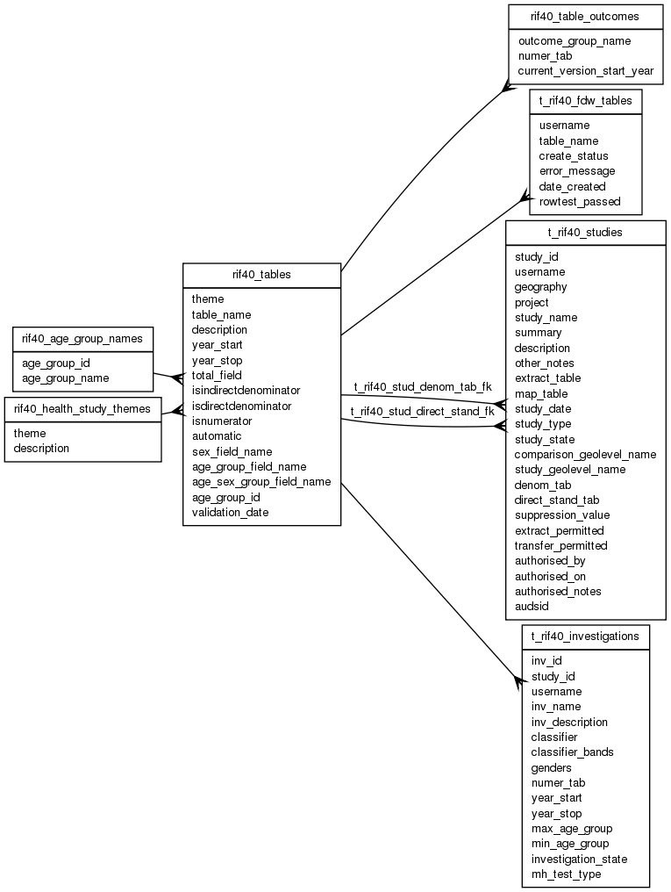

| Table: rif40.rif40_tables | |||
| RIF numerator and denominator tables | |||
| Size: medium, Select frequency: medium, Update frequency: medium | |||
| Columns | |||
| Name | Type | Constraints | Description |
| theme | VARCHAR (30) | NOT NULL | Health Study theme |
| table_name | VARCHAR (30) | NOT NULL | RIF table name. Normally the schema owner will not be able to see the health data tables, so no error is raised if the table cannot be resolved to an acceisble object. The schema owner must have access to automatic indirect standardisation denominators. |
| description | VARCHAR (250) | NOT NULL | Description |
| year_start | SMALLINT | NOT NULL | Year table starts |
| year_stop | SMALLINT | NOT NULL | Year table stops |
| total_field | VARCHAR (30) | Total field (when used aggregated tables) | |
| isindirectdenominator | SMALLINT | NOT NULL | Is table a denominator to be used in indirect standardisation (0/1) |
| isdirectdenominator | SMALLINT | NOT NULL | Is table a denominator to be used in direct standardisation (0/1). E.g. POP_WORLD, POP_EUROPE. |
| isnumerator | SMALLINT | NOT NULL | Is table a numerator (0/1) |
| automatic | SMALLINT | Able to be used in automatic RIF40_NUM_DENOM (0/1, default 0). Cannot be applied to direct standardisation denominator. Restricted to 1 denominator per geography to prevent the automatic RIF40_NUM_DENOM having >1 pair per numerator. This restriction is actually enforced in RIF40_NUM_DENOM because of the "ORA-04091: table RIF40.RIF40_TABLES is mutating, trigger/function may not see it" error. A user specific T_RIF40_NUM_DENOM is supplied for other combinations. The default is 0 because of the restrictions. | |
| sex_field_name | VARCHAR (30) | Name of SEX field. No default. AGE_GROUP_FIELD_NAME must be set, AGE_SEX_GROUP_FIELD_NAME must not be set. | |
| age_group_field_name | VARCHAR (30) | Name of AGE_GROUP field. No default. SEX_FIELD_NAME must be set, AGE_SEX_GROUP_FIELD_NAME must not be set. | |
| age_sex_group_field_name | VARCHAR (30) | Name of AGE_SEX_GROUP field. Default: AGE_SEX_GROUP; AGE_GROUP_FIELD_NAME and SEX_FIELD_NAME must not be set. | |
| age_group_id | SMALLINT | Type of RIF age group in use. Link to RIF40_AGE_GROUP_NAMES. No default. | |
| validation_date | TIMESTAMP | Date table contents were validated OK. | |
| Primary key | |||
| Name | Columns | Description | |
| rif40_tables_pk | table_name | ||
| Foreign keys | |||
| Name | Columns | Referenced table | Description |
| rif40_tables_age_group_id_fk | age_group_id | rif40_age_group_names | |
| rif40_tables_theme_fk | theme | rif40_health_study_themes | |
| Incoming foreign keys | |||
| Name | Columns | Referencing table | Description |
| rif40_outcome_numer_tab_fk | numer_tab | rif40_table_outcomes | |
| t_rif40_fdw_tables_tn_fk | table_name | t_rif40_fdw_tables | |
| t_rif40_stud_denom_tab_fk | denom_tab | t_rif40_studies | |
| t_rif40_stud_direct_stand_fk | direct_stand_tab | t_rif40_studies | |
| t_rif40_inv_numer_tab_fk | numer_tab | t_rif40_investigations | |
| Grants | |||
| Role | Actions | ||
| rif_manager | select, insert, delete, update | ||
| rif40 | select, references, insert, delete, update | ||
| PUBLIC | select, references | ||
